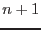
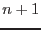

XMM-Newton Science Analysis System
psfgen (psfgen-1.2) [xmmsas_20170112_1337-16.0.0]
Comments
- psfgen produces the PSF image(s) at the specific position in TEL.
- psfgen creates a PSF image for each energy value in energy list and one summation PSF image using the weightings. Therefore, if there
 energy values in the list,  PSF images will be created, except for , which only one image will be created.
energy values in the list,  PSF images will be created, except for , which only one image will be created.
- The first PSF image is always the summation PSF image. Other PSF images are named with their energy values. All PSF images are saved in one fits file.
XMM-Newton SOC/SSC -- 2017-01-12